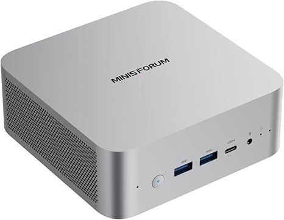
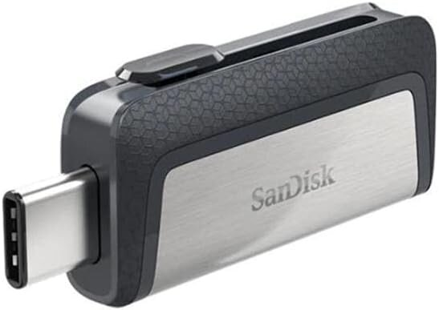
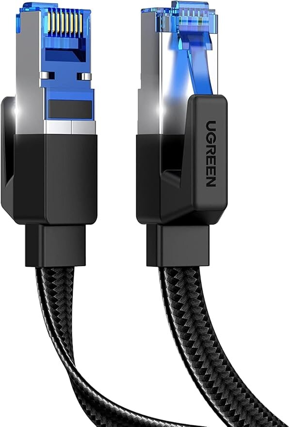

Choosing which bitcoin node equipment
Running a Bitcoin node is both a technical decision and a statement of sovereignty. The choice of hardware shapes your experience and what values you emphasize.
There is flexibility: you can use a mini PC (like the MINISFORUM AI X1-255 or Beelink SER9), a Raspberry Pi or similar DIY single-board computer, or a prebuilt Start9 Server. Each option offers different tradeoffs in cost, performance, expandability, and learning opportunity.
Exploring these options is about learning, doing, and experimenting with the tools that secure Bitcoin. Each step deepens understanding of how sovereignty is enforced and how freedom is preserved.
Why this equipment?
Choosing the right hardware for a self-sovereign Bitcoin node is about more than just specs:
- Reliability: Stable hardware means less downtime and fewer headaches.
- Performance: Sufficient CPU, RAM, and storage allow you to run multiple apps and future-proof your setup.
- Learning: DIY hardware builds deepen your understanding and control.
- Sovereignty: Owning and configuring your own device is a core value of the Bitcoin ethos.
Comparing hardware options
| Feature/Device | Raspberry Pi 5 (8GB) | Beelink SER9 Mini PC | Start9 Server One | MINISFORUM AI X1-255 (Final Choice) |
|---|---|---|---|---|
| CPU | Broadcom BCM2712 (4-core Cortex-A76 @ 2.4GHz) | AMD Ryzen 9 9900HX (12-core/24-thread @ 5.6GHz) | Custom (varies) | AMD Ryzen 7 255 (8-core/16-thread @ 5.1GHz) |
| Memory | 8GB (fixed) | Up to 64GB DDR5 (2x SODIMM) | 16-32GB DDR5 | Up to 96GB DDR5 (2x SODIMM) |
| Storage | microSD or USB 3.0 SSD | Up to 2TB NVMe SSD | 500GB-1TB NVMe SSD | 2x M.2 2280 NVMe (up to 4TB each) |
| Networking | 1x GbE | 2.5G LAN, WiFi 7, BT 5.4 | 2.5G LAN, WiFi (optional) | 2.5G LAN, WiFi 7, BT 5.4 |
| Ports | 2x USB 2.0, 2x USB 3.0, HDMI, USB-C | USB-A/C, HDMI, DP, microSD, Thunderbolt 4 | USB-A/C, HDMI, DP | USB-A/C, HDMI, DP, OcuLink |
| Wireless | Optional WiFi/Bluetooth via expansion | WiFi 7, Bluetooth 5.4 | WiFi (optional), Bluetooth (varies) | WiFi 7, Bluetooth 5.4 |
| Price (USD) | $80 (board), $120-150 (kit), $200 (with SSD) | $599-699 (barebone), $799-899 (32GB/512GB) | $599 (16GB/500GB), $799 (32GB/1TB) | $500 (promo), $550-700 (typical) |
| Form Factor | Compact SBC | Mini PC | Mini PC | Mini PC |
| Power | ~5-8W | Higher (25-45W typical) | Moderate | ~25-45W typical |
| Expandability | Limited (RAM fixed, storage via USB) | High (RAM, storage, ports, eGPU) | Moderate (storage, some RAM options) | High (RAM, storage, OcuLink, eGPU) |
| Pre-installed OS | None | None | Start9 OS | None |
| Support | Community | Vendor | Official Start9 support | Vendor |
Key distinctions
Raspberry Pi 5 (8GB):
- ✅ Very affordable entry point
- ✅ Low power, compact, huge community
- ✅ Great for learning and experimentation
- ❌ Limited RAM (8GB max), ARM compatibility issues
- ❌ Not ideal for running many apps or heavy workloads
- ❌ Requires external SSD for performance
Beelink SER9 Mini PC:
- ✅ Extreme compute power, high RAM capacity
- ✅ Premium build quality, future-proof
- ✅ Many ports, Thunderbolt 4, eGPU support
- ❌ Expensive, overkill for most node needs
- ❌ High power consumption
Start9 Server One:
- ✅ Plug-and-play, pre-installed Start9 OS
- ✅ Official support, guaranteed compatibility
- ✅ Good for those who want zero hassle
- ❌ Higher cost for similar specs
- ❌ Less DIY, less learning opportunity
- ❌ Limited customization
MINISFORUM AI X1-255:
- ✅ Excellent value, powerful and scalable
- ✅ Up to 96GB RAM, 2x NVMe, OcuLink, eGPU
- ✅ Great for running many apps, future-proof
- ✅ DIY install, full control, learning opportunity
- ❌ Slightly larger than Pi, more power draw
Decision framework
Choose based on your goals, budget, and technical comfort level:
Choose Raspberry Pi 5 (8GB) if you want
- ✅ The lowest cost and lowest power usage
- ✅ A compact, silent, and simple device
- ✅ To learn and experiment with Bitcoin nodes on ARM
- ✅ Huge community support and lots of guides
- ⚡️ Caution: Limited RAM, not ideal for many apps or heavy workloads
- ⚡️ Caution: Slower performance, needs external SSD for best results
Choose Beelink SER9 Mini PC if you want
- ✅ Extreme compute power for many VMs or heavy multitasking
- ✅ High RAM and storage expandability
- ✅ Premium build and lots of ports (Thunderbolt, eGPU, etc.)
- ✅ To use the device as a workstation/server beyond just a node
- ⚡️ Caution: High price, overkill for most node-only setups
- ⚡️ Caution: Higher power consumption
Choose Start9 Server One if you want
- ✅ Zero hassle, plug-and-play experience
- ✅ Official Start9 support and guaranteed compatibility
- ✅ Pre-installed Start9 OS, ready out of the box
- ✅ Minimal setup and maintenance
- ⚡️ Caution: Higher cost for similar specs
- ⚡️ Caution: Less DIY, less learning, limited customization
Choose MINISFORUM AI X1-255 if you want
- ✅ The best value for high performance and expandability
- ✅ To run many apps (Bitcoin Core, Lightning, BTCPay, Nostr, Nextcloud, Rust projects) at once
- ✅ Full control over install, upgrades, and hardware
- ✅ Room to grow (RAM, storage, OcuLink, eGPU)
- ✅ A hands-on, learning-focused experience
- ⚡️ Caution: Slightly larger than Pi, more power draw (but efficient for class)
My choice: MINISFORUM AI X1-255
After evaluating all options, I selected the MINISFORUM AI X1-255 for these reasons:
- Exceptional value — $500 promo bundle (8-core Ryzen, 32GB RAM, 1TB SSD, all ports). Even at $550–700, it’s a great value for the specs.
- Scalable for multiple Bitcoin applications — 32GB RAM and a powerful CPU enable running a full sovereignty stack (Bitcoin Core, Lightning, Mempool, BTCPay, Electrum, Nostr relay, Nextcloud, custom Rust projects) — all at once.
- Expansion and connectivity — 2x M.2 NVMe slots (RAID-1 possible), OcuLink, USB 3.2, USB-C, external GPU support, and more. Room for backup, NAS, and family storage.
- Professional build and learning — Reliable AMD platform, DDR5, active cooling, and a DIY install process for full control and learning.
- Network and future-proofing — 2.5G Ethernet, WiFi 7, and enough power for years of growth and experimentation.
Summary: The MINISFORUM AI X1-255 is the best fit for a power user who wants to run a robust, scalable, and sovereign Bitcoin node with Start9 OS — and to keep learning and building for years to come.
Final Equipment List (November 2025)
Main Hardware
- MINISFORUM AI X1-255 Mini PC AMD Ryzen 7 255 (8C/16T), 32GB DDR5, 1TB SSD, 2.5G RJ45 port, WiFi7, BT5.4. Amazon link

Installation Media
- SanDisk 64GB Ultra Dual Drive USB Type-C One-time Start9 boot drive for installing Start9 OS. Amazon link

Networking
- UGREEN Cat 8 Ethernet Cable (3FT) High-speed 40Gbps, shielded RJ45 cable for stable wired connection. Amazon link

Total Cost: ~$550-600 USD
This represents excellent value for a complete, production-ready Bitcoin sovereignty stack with room for significant expansion.
Future Expansion Plan
The MINISFORUM AI X1-255 is chosen specifically for its expansion capabilities to support a complete redundant storage infrastructure. Here’s my planned future expansion:
Phase 1: Internal Storage Redundancy (RAID-1)
Goal: Dual internal SSDs with RAID-1 for operating system and application redundancy.
Configuration:
- 2x 2TB NVMe SSDs in RAID-1 configuration
- Primary use: Start9 OS installation and Bitcoin applications
- Redundancy: Mirror configuration ensures no data loss if one drive fails
Hardware requirements:
- X1-255 provides 2× M.2 2280 NVMe slots (use both for RAID-1)
- Software RAID configuration via Proxmox VE (Btrfs, ZFS, or Linux md-raid at host level), or Start9 OS/Linux if running directly on hardware in future
Configuration method:
During Proxmox VE installation, select “Btrfs RAID-1” for the 2x 2TB NVMe drives to create mirrored storage at the host level. This protects all VMs including Start9 OS from single-drive failure. Proxmox will automatically manage the RAID-1, ensuring both Bitcoin Core and other applications in Start9 have redundant storage.
Suggested use — bundled 1TB NVMe SSD
The MINISFORUM X1-255 comes with a 1TB NVMe SSD that will not be used in Phase 1 (since Phase 1 requires dedicated RAID-1 drives). Once you replace the primary drive(s) with two larger NVMe SSDs for RAID-1, the bundled 1TB will be available. Consider using this spare 1TB drive for:
- Start9 VM config backups: Store encrypted backups of Start9 master password, service configurations, and critical blockchain data outside the RAID-1 volume for disaster recovery
- Offline signing / Cold storage: Use as an isolated signing device or air-gapped cold storage for private keys
- Hot backup drive: Keep as a live backup that can be quickly swapped in if Phase 1 RAID drives fail
- Blockchain data archive: Store Bitcoin Core snapshots or historical blockchain states for quick node rebuilds
To keep the spare 1TB SSD safe and accessible, consider a budget USB 3.1 M.2 NVMe enclosure (~$15-30 USD). Recommended options include ORICO or ASUS MB16ACV style USB-C M.2 enclosures (aluminum, passive cooling). Connect via USB-C to the MINISFORUM or an external USB hub; store the drive in a fireproof safe, safety deposit box, or other physically separate location. USB-powered enclosures eliminate the need for external adapters.
This lets you hot-swap the 1TB drive for testing/backup, store backups external to the main device for disaster recovery, and keep the drive secure yet accessible.
Estimated cost:
- 2x 2TB NVMe SSDs: ~$125-175 each
- Optional USB 3.1 M.2 NVMe enclosure for 1TB backup: ~$20-30
Total: ~$270-380
Phase 2: External Storage Redundancy (RAID-1)
Goal: Large-scale external storage with RAID-1 for family data and NAS functionality.
Configuration:
- 2x 8TB+ SSDs in external enclosure with RAID-1
- Primary use: Family storage, blockchain data, backup archives
- Redundancy: Mirror configuration ensures no data loss if one drive fails
- Connection: USB 3.2 Gen 2 or OcuLink for maximum speed
Hardware requirements:
- Budget USB 3.2 Enclosure (no built-in RAID, 2+ drive bays for 3.5“/2.5“ SATA drives)
- ~$30-60 USD (significantly cheaper than hardware RAID enclosures)
- USB 3.2 Gen 2 (10 Gbps) connection
- Tool-free drive installation preferred
- Similar concept to Phase 1 M.2 NVMe enclosure, but for larger SATA drives
- 2x 8TB SSDs (Samsung 870 QVO or similar)
- SATA SSDs are more cost-effective for large capacities
- Enterprise-grade options for better endurance
Configuration method:
Attach the budget USB enclosure with both 8TB drives to Proxmox VE host. Configure Proxmox to create a software RAID-1 using mdadm or LVM across the two drives. Mount this RAID volume to the Start9 OS VM, where Nextcloud will manage family file storage (photos, documents, encrypted backups) with full RAID-1 redundancy.
Estimated cost:
- Budget USB 3.2 Enclosure: ~$30-60
- 2x 8TB SSDs: ~$450-600 each
Total: ~$800-1,100
Planned Storage Architecture
MINISFORUM AI X1-255 with Proxmox VE
│
├── Phase 1: Internal Storage Redundancy (RAID-1)
│ └── 2x 2TB NVMe SSDs (Btrfs RAID-1 at Proxmox host level)
│ │
│ └── Start9 OS VM
│ ├── Bitcoin Core (full archival node)
│ ├── Lightning Network (instant payments)
│ ├── BTCPay Server (payment processor)
│ ├── Mempool Explorer (blockchain explorer)
│ ├── Electrs (Electrum server)
│ ├── Nostr Relay (censorship-resistant messaging)
│ ├── Mining Software (solo mining or pool)
│ ├── Wallet Services (multiple backends)
│ └── Custom Rust Bitcoin projects
│
└── Phase 2: External Storage Redundancy (Software RAID-1)
└── 2x 8TB SSDs via Budget USB 3.2 Enclosure
(Software RAID-1 configured in Proxmox using mdadm/LVM)
│
└── Mounted to Start9 OS VM
└── Nextcloud NAS (family storage management)
├── Family Photos
├── Documents
├── Media Library
├── Encrypted Backups
├── Blockchain Data Archives
└── Node Historical Data
Configuration Summary:
- Phase 1: Btrfs RAID-1 protects Bitcoin applications and Start9 system
- Phase 2: Software RAID-1 (mdadm/LVM) protects family data via Nextcloud NAS
- Deployment: Both phases run on Proxmox VE with Start9 OS VM managing all services
- Cost savings: Budget USB enclosure ($30–60) instead of expensive hardware RAID ($150–250)
Source: Minisforum AI X1 product page lists “2× M.2 2280 NVMe SSD Slot” under Product specification:
🗂️ Hardware Context Notice: The manufacturer page does not explicitly state PCIe generation/lanes per slot. PCIe 4.0 x4 per M.2 slot is typical for this platform, but you can confirm via the user manual or by inspecting with
lspcionce provisioned.
Additional Future Expansions
Beyond storage, the X1-255 can support:
- External GPU - Via OcuLink for mining or AI experiments (~$300-800)
- UPS Backup - Uninterruptible power supply for reliability (~$100-150)
- Network Upgrade - 10 Gbps switch if needed for faster local transfers (~$200-300)
Timeline and Budget
Phase 1 (Internal RAID-1): Estimated 6-12 months
- Cost: ~$270-380 (2x 2TB NVMe SSDs + optional USB enclosure for 1TB backup)
- Implementation: After Start9 OS is stable and primary apps configured
Phase 2 (External RAID-1 + NAS): Estimated 12-24 months
- Cost: ~$800-1,100 (budget USB enclosure + 2x 8TB SSDs)
- Implementation: When family storage needs exceed local device capacity
Total future investment: ~$1,070-1,480 Combined with initial: ~$1,620-2,080 for complete sovereignty infrastructure
Why This Expansion Matters
- Data Sovereignty: Complete control over family data without cloud dependencies
- Redundancy: RAID-1 protects against drive failure (no data loss)
- Bitcoin Growth: Blockchain continues growing (~500GB+ and increasing)
- Application Diversity: Run multiple services without performance degradation
- Future-Proof: Infrastructure scales with needs over 5-10 years
The initial investment provides a solid foundation that can scale with future needs without requiring a complete hardware replacement.